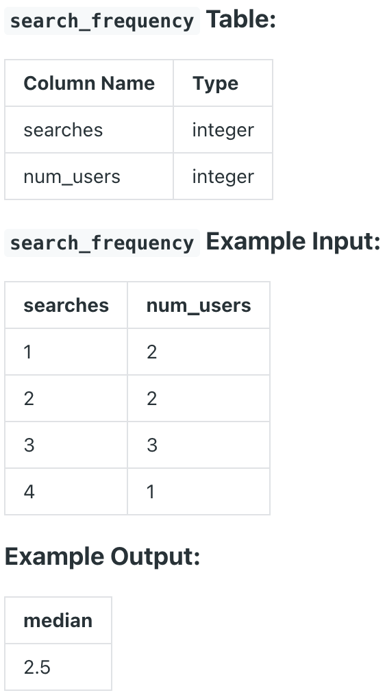

Question sourced from DataLemur.com.
Database: PostgreSQL
Google's marketing team is making a Superbowl commercial and needs a simple statistic to put on their TV ad: the median number of searches a person made last year.
However, at Google scale, querying the 2 trillion searches is too costly. Luckily, you have access to the summary table which tells you the number of searches made last year and how many Google users fall into that bucket.

/*
For each search number bucket, generate a row for each user in that
bucket using GENERATE_SERIES(). (For example, search bucket 3 has
3 total users. In the resulting table, the search bucket column
would have 3, 3, 3, and the GENERATE_SERIES() column would have 1,
2, 3.) Then, use PERCENTILE_CONT() to find the 50% percentile (i.e.
the median) across the search bucket column in the previous table.
(There is no MEDIAN function in PostgreSQL.)
*/
WITH search_series AS (
SELECT searches, GENERATE_SERIES(1, num_users)
FROM search_frequency
ORDER BY searches
)
SELECT PERCENTILE_CONT(0.5)
WITHIN GROUP(ORDER BY searches) AS median
FROM search_series;